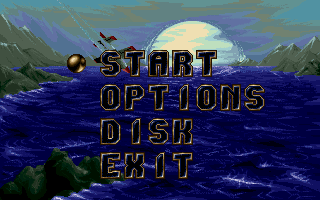
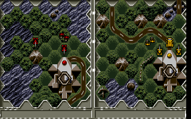
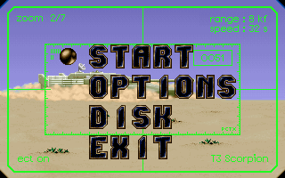
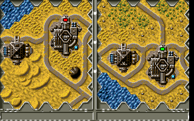

名稱：狂島浴血1／戰島1 (Battle Isle，英文版)
簡介：Blue Byte 1992年出品的回合制策略遊戲，由Ubisoft代理發行，台灣由智冠代理進口。
同年推出「資料片一（Data Disk 1）」，1993年推再出獨立資料片「克羅莫斯之月
（The Moon of Chromos）」，2000年收錄在「一二代合輯」光碟中 [待補]。




備註：本版為磁片版，玩主程式請執行PLAY.BAT，玩資料片請執行PLAY2.BAT。
保護：無
備註：資料片光碟版固定將存檔放在C:\BLUEBYTE目錄裡。
檔案：bi1.rar = 光碟版主程式（1994）
bi1d1.rar = 光碟版資料片（1994）